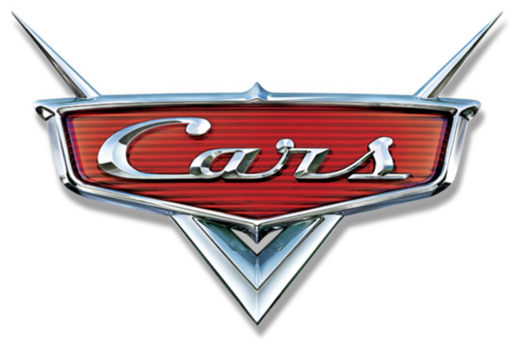

The Greatest Movie of All Time

Cars is a 2006 American animated sports comedy film produced by Pixar Animation Studios for Walt Disney Pictures. The film was directed by John Lasseter, co-directed by Joe Ranft, produced by Darla K. Anderson, and written by Lasseter, Ranft, Dan Fogelman, Kiel Murray, Phil Lorin, and Jorgen Klubien based on a story by Lasseter, Ranft, and Klubien.
The film stars an ensemble voice cast of Owen Wilson, Paul Newman (in his final voice acting theatrical film role), Bonnie Hunt, Larry the Cable Guy, Tony Shalhoub, Cheech Marin, Michael Wallis, George Carlin, Paul Dooley, Jenifer Lewis, Guido Quaroni, Michael Keaton, Katherine Helmond, John Ratzenberger and Richard Petty, while race car drivers Dale Earnhardt Jr. (as "Junior"), Mario Andretti, Michael Schumacher and car enthusiast Jay Leno (as "Jay Limo") voice themselves.
Synopsis
Set in a world populated entirely by anthropomorphic vehicles, the film follows a young self-obsessed racecar named Lightning McQueen who, on the way to the most important race of his life, becomes stranded in a forgotten town along U.S. Route 66 called Radiator Springs, where he learns about friendship and begins to reevaluate his priorities.